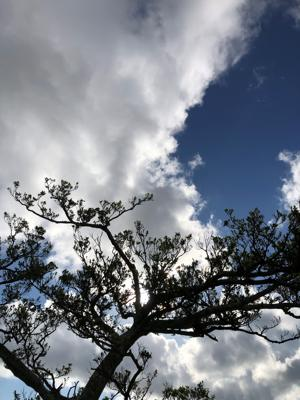
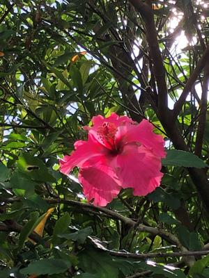

うるがいの話 ある日
最新: メガネのフレーム【うるがいの話 ある日】とは 一日だけのプログです
『うるがいの話』の最新一日だけのプログで、通信料が少なく経済的だ。カニの画像をクリックすると全ての日付が載る『うるがいの話』サイトを表示します
|
|
【うるがいの話】 うるがい(ｳﾙｶﾞｲ urugai)とは、『もずくがに』の名前でとても大きくなります。 |
|---|---|
|
|
【カミマヤーの話】 猫のことを方言でマヤーといいます。カミマヤー（kamimayaa）とは、神の猫のことです。 |
|
【たながぁの音楽】 たながぁ（ﾀﾅｶﾞｰ tanagaa）とは手長えびのことで、何種類かあり大きいのは車 エビぐらいになります。 |

|
【ぶながぁの話】 ぶながぁ(ﾌﾞﾅｶﾞｰ bunagaa)とは、赤い髪の毛、赤い身体、そして身長は１ｍ２０ｃｍ ぐらい、川の蟹を食べているの目撃された。場所は沖縄県国頭郡大宜味村のと ある村僕の隣近所に住んでいる爺さんから、聞いた話です。 |
|
|
【ギーマの話】 ギーマ(giima)とは、山原の里山に咲くスズランに似た、 花を付けます。実は食べられます、 気が付くと口の周りが紫になっています。 |
2022年08月03日 (水）メガネのフレーム
16:07

台風６号の時、ネコの世話をする世話をするために、雨の降る風が強い中、マ
ンションの近くに駐車した。そして、傘をもって車から出ようとするとに強い
風に吹れ、傘がメガネにぶつかりフレームが歪んでしまった。直さなければい
けなくなる、しかたないので以前利用して今は、遠近にも使える中近用のメガ
ネ２号を使う、仮性近視（０．７）のレベルか。ふと、これを使ってふすま貼
りをしたら、酔わないかも。最後の襖（６枚目）をこのメガネを掛けたまま作
業をした（これまでは、裸眼）。正解！、気持ち悪くならずに済んだ。視力が
会う合わないは、とても重要だと改めて思いしらされる。

話が変わるが、ミィヤーンは餌は一切食べず、僅かな水だけで持っている。最
後に一度だけ動物病院ヘ連れて行くかと、議論したもののこの爆発的なコロナ
の状況も踏まえるとヨメは断念する。いつのまにか、夜の動物係は私で生死を
確認するためマンションに行く。私だってその役は辛いが、マ仕方ない。
１６時０１分 ビットコインの総資産 ￥８、８９４↓